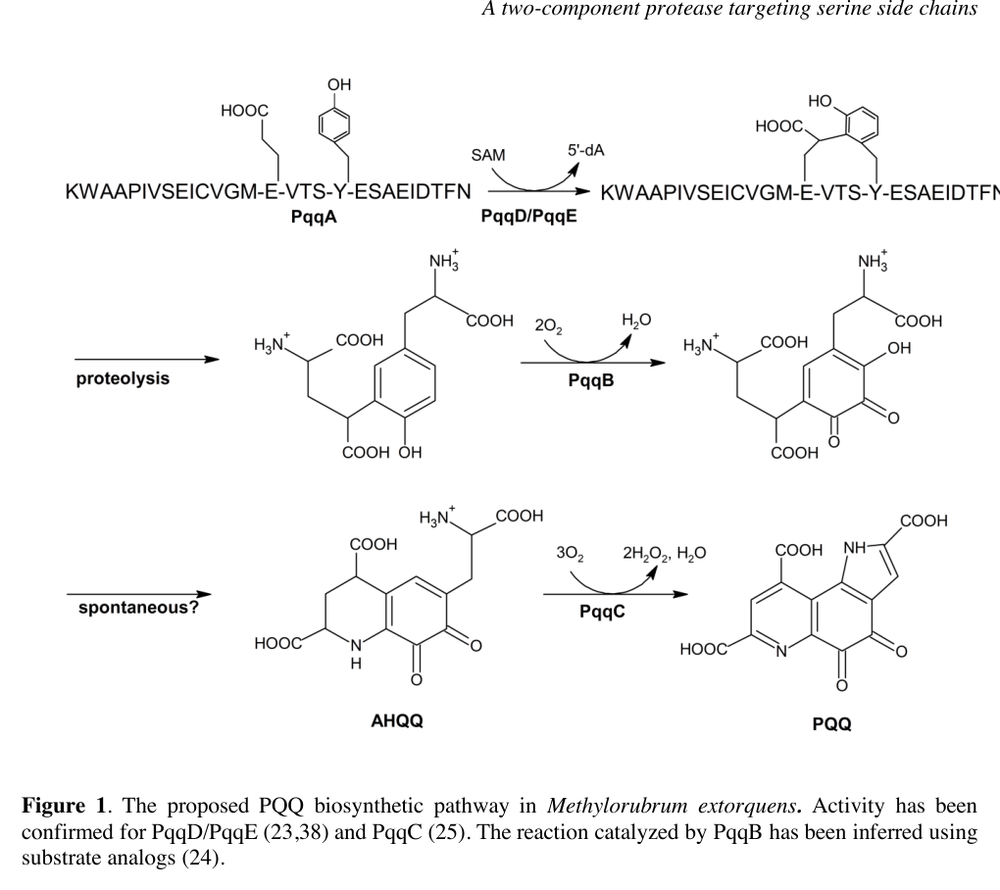

pqqA (synonym pqqD; locus MexAM1_META1p1751) encodes the 29-amino acid ribosomally synthesized precursor peptide for pyrroloquinoline quinone (PQQ) biosynthesis in Methylorubrum (Methylobacterium) extorquens AM1. PqqA is not an enzyme; it is the biosynthetic substrate of the pathway. Its conserved glutamate (Glu16) and tyrosine (Tyr20) residues are recognized by the radical-SAM enzyme PqqE (presented via the PqqD chaperone) and cross-linked through a de novo C-C bond (CROSSLNK 16..20, Glu-Tyr); the modified core is then excised by proteolysis and oxidatively matured (PqqB hydroxylase, PqqC oxidase) into the mature PQQ cofactor. The peptide is synthesized and processed in the cytosol, whereas mature PQQ is deployed by periplasmic methanol dehydrogenases (Ca-dependent MxaFI and lanthanide-dependent XoxF) central to AM1 methylotrophy. Notably, deletion and insertion mutants of pqqA in M. extorquens AM1 still grow on methanol and produce PQQ, indicating that this organism has an alternative source for the cross-linked precursor; nonetheless PqqA represents the canonical, conserved PQQ biosynthetic substrate. NOTE on nomenclature - in older AM1 literature the precursor-peptide locus was called pqqD, which collides with the modern usage of "PqqD" for the separate peptide chaperone; UniProt Q49148 is the precursor peptide (PqqA), not the chaperone.
| GO Term | Evidence | Action | Reason |
|---|---|---|---|
|
GO:0018189
pyrroloquinoline quinone biosynthetic process
|
IEA
GO_REF:0000120 |
ACCEPT |
Summary: Correct biological-process annotation. PqqA is the precursor peptide substrate for PQQ biosynthesis, contributing the conserved Glu16 and Tyr20 residues that are cross-linked (CROSSLNK 16..20, Glu-Tyr) and excised to build the PQQ core. UniProt states the peptide is required for PQQ biosynthesis, and the falcon deep-research synthesis confirms PqqA is the ribosomally synthesized precursor peptide of the pathway rather than a catalytic enzyme. The IEA annotation is the most appropriate representation of its core role.
Reason: PqqA is not a standalone enzyme, but it is the pathway precursor peptide required for pyrroloquinoline quinone biosynthesis; the BP annotation correctly captures its core function.
Supporting Evidence:
file:METEA/pqqA/pqqA-uniprot.txt
Required for coenzyme pyrroloquinoline quinone (PQQ)
file:METEA/pqqA/pqqA-uniprot.txt
Pyrroloquinoline quinone (Glu-Tyr)
file:METEA/pqqA/pqqA-goa.tsv
pyrroloquinoline quinone biosynthetic process
file:METEA/pqqA/pqqA-deep-research-falcon.md
PqqA as a short peptide precursor
file:METEA/pqqA/pqqA-deep-research-falcon.md
The peptide itself does **not catalyze a reaction**; it is the biosynthetic substrate.
|
Q: What is the alternative source of the cross-linked Glu-Tyr precursor that allows M. extorquens AM1 pqqA deletion mutants to still produce PQQ?
Experiment: Delete pqqA and complement with wild-type and Glu16/Tyr20 substitution variants, then quantify cellular PQQ and methanol dehydrogenase activity; proteomically search for a substitute precursor peptide in the pqqA deletion background.
Hypothesis: PqqA supplies the Glu-Tyr precursor for PQQ production, but a redundant peptide substitutes in AM1.
Type: targeted genetics and metabolite analysis
The research report should be a detailed narrative explaining the function, biological processes, and localization of the gene product. Citations should be given for all claims.
You should prioritize authoritative reviews and primary scientific literature when conducting research. You can supplement
this with annotations you find in gene/protein databases, but these can be outdated or inaccurate.
We are specifically interested in the primary function of the gene - for enzymes, what reaction is catalyzed, and what is the substrate specificity? For transporters, what is the substrate? For structural proteins or adapters, what is the broader structural role? For signaling molecules, what is the role in the pathway.
We are interested in where in or outside the cell the gene product carries out its function.
We are also interested in the signaling or biochemical pathways in which the gene functions. We are less interested in broad pleiotropic effects, except where these elucidate the precise role.
Include evidence where possible. We are interested in both experimental evidence as well as inference from structure, evolution, or bioinformatic analysis. Precise studies should be prioritized over high-throughput, where available.
UniProt Q49148 is annotated in Methylorubrum extorquens strain AM1 (syn. Methylobacterium extorquens AM1) as Coenzyme PQQ synthesis protein A, with synonyms pqqA / pqqD. A critical AM1-specific nomenclature mismatch exists in the literature: in older AM1 annotations, the locus called pqqD corresponds to the precursor peptide gene later called pqqA, while PqqD in modern mechanistic literature refers to a distinct peptide chaperone that binds the precursor peptide and interacts with the radical-SAM enzyme PqqE. Therefore, Q49148 should be interpreted functionally as the PQQ precursor peptide PqqA, not the PqqD chaperone protein. (zhu2020biogenesisofthe pages 9-10, zhu2020biogenesisofthe pages 8-9)
| Topic | Key points | Evidence (with citation IDs) | Publication date & URL |
|---|---|---|---|
| Identity verification | Target verified as UniProt Q49148 from Methylorubrum extorquens AM1 (syn. Methylobacterium extorquens AM1), ordered locus MexAM1_META1p1751. Critical caveat: AM1 literature contains a historical naming swap in which an older pqqD assignment corresponds to what later literature calls pqqA; thus Q49148 should be interpreted as the precursor-peptide locus, not the standalone PqqD chaperone characterized in many mechanistic studies. | Historical nomenclature mismatch and AM1-specific mapping of old pqqD to later pqqA are explicitly noted in reviews and AM1 pathway papers (zhu2020biogenesisofthe pages 9-10, zhu2020biogenesisofthe pages 8-9, martins2019atwocomponentprotease pages 2-3). | 2019-10-11, https://doi.org/10.1074/jbc.ra119.009684; 2020-12, https://doi.org/10.1016/j.cbpa.2020.05.001 |
| Protein type | The gene product corresponding to this AM1 locus is best understood as a small ribosomally synthesized precursor peptide (RiPP precursor) for PQQ biosynthesis, not an enzyme. Reported size in the literature is ~22-24 aa, containing the conserved Glu and Tyr residues that furnish atoms to the PQQ core. | PqqA described as a short peptide precursor essential for PQQ formation, with conserved Glu/Tyr and mutagenesis support (zhu2020biogenesisofthe pages 3-5, zhu2020biogenesisofthe pages 8-9, martins2019atwocomponentprotease pages 2-3, bhanja2021studyofpyrroloquinoline pages 2-3). | 2019-10-11, https://doi.org/10.1074/jbc.ra119.009684; 2020-12, https://doi.org/10.1016/j.cbpa.2020.05.001; 2021-06, https://doi.org/10.3389/fagro.2021.667339 |
| Pathway step | Primary function: substrate peptide for the first committed PQQ-biosynthetic transformation. In the cytosol, the PqqD/PqqE system acts on PqqA to install a de novo C-C bond between Glu and Tyr (cross-linked PqqA* intermediate), after which proteolysis and downstream PqqB/PqqC chemistry complete PQQ formation. The peptide itself does not catalyze a reaction; it is the biosynthetic substrate. | Reviews and AM1 experimental work support PqqA as the precursor and PqqD/PqqE as the machinery for Glu-Tyr cross-linking; pathway schematic confirms this placement (zhu2020biogenesisofthe pages 3-5, martins2019atwocomponentprotease pages 2-3, martins2019atwocomponentprotease pages 10-11, yao2026radicalenzymaticpeptide pages 6-7, martins2019atwocomponentprotease media 2712d995). | 2019-10-11, https://doi.org/10.1074/jbc.ra119.009684; 2020-12, https://doi.org/10.1016/j.cbpa.2020.05.001; 2026-02, https://doi.org/10.1039/d5cs00585j |
| Key interactions | PqqA-PqqD: high-affinity, specific binding; PqqD-PqqE: direct interaction documented by multiple biophysical methods. PqqD functions as a peptide chaperone/RRE-like factor, presenting PqqA to radical SAM enzyme PqqE. Thus, for Q49148, the biologically relevant interaction network is precursor peptide \u2192 chaperone (PqqD) \u2192 maturase (PqqE). | Tight PqqD-PqqA complex and mapped PqqD-PqqE contacts shown by native MS/SPR/ITC/NMR/EPR/HDX-type evidence summarized in review literature; AM1 studies support the same pathway logic (zhu2020biogenesisofthe pages 3-5, zhu2020biogenesisofthe pages 9-10, martins2019atwocomponentprotease pages 10-11, yao2026radicalenzymaticpeptide pages 6-7). | 2020-12, https://doi.org/10.1016/j.cbpa.2020.05.001; 2026-02, https://doi.org/10.1039/d5cs00585j |
| Localization | Biosynthesis stage: expected cytosolic localization, because PqqA, PqqD, PqqE, and early tailoring/proteolysis steps operate on the intracellular peptide precursor. Physiological end use: mature PQQ then serves as a redox cofactor for periplasmic methanol dehydrogenases such as MxaFI/XoxF in methylotroph physiology. | Cytosolic pathway logic for precursor processing and direct linkage of PQQ to methanol dehydrogenase in methylotrophs are supported in pathway reviews and AM1/methylotroph literature (martins2019atwocomponentprotease pages 2-3, zhu2020biogenesisofthe pages 8-9). | 2019-10-11, https://doi.org/10.1074/jbc.ra119.009684; 2020-12, https://doi.org/10.1016/j.cbpa.2020.05.001 |
| Engineering / application links | Functional significance: PQQ biosynthesis underpins PQQ-dependent alcohol/methanol dehydrogenases, including lanthanide-linked methylotrophic systems. In AM1, PQQ is connected to methanol oxidation and rare-earth-dependent metabolism; AM1 has also been developed for REE bioleaching/recovery. More broadly, engineered PQQ production has reached industrially relevant levels in methylotrophs: 1.52 g/L PQQ, 40.3 mg/g DCW, after 144 h in a 5-L fed-batch Hyphomicrobium denitrificans process; heterologous systems cited in the same study yielded 2 mg/L in E. coli, 0.56-0.78 mg/L in engineered Klebsiella pneumoniae, ~51.3 mg/L in Gluconobacter, and a cell-free system converted ~2.5 mg/mL PqqA to PQQ at 70-80% conversion. | Quantitative production statistics from recent engineering study; AM1 application to REE leaching/recovery and link between PQQ and methylotrophic/lanthanide systems from recent environmental biotechnology work; PQQ-MDH link from foundational review (ren2023adaptiveevolutionarystrategy pages 1-2, zhu2020biogenesisofthe pages 8-9). | 2023-01-24, https://doi.org/10.1186/s13068-023-02261-y; 2023-12-19, https://doi.org/10.1021/acs.est.3c06775; 2020-12, https://doi.org/10.1016/j.cbpa.2020.05.001 |
Table: This table summarizes the identity, biochemical role, naming ambiguity, interaction partners, localization, and application relevance of UniProt Q49148 in Methylorubrum extorquens AM1. It is designed to help distinguish the AM1 precursor-peptide locus from the separate PqqD chaperone discussed in broader PQQ literature.
PQQ is a peptide-derived redox cofactor used by bacterial quinoprotein dehydrogenases, including methanol dehydrogenases central to methylotrophy. The modern view is that PQQ is produced via a ribosomally synthesized and post-translationally modified peptide (RiPP-like) logic: a short peptide precursor is enzymatically crosslinked and then processed into the small-molecule cofactor. (zhu2020biogenesisofthe pages 8-9, zhu2020biogenesisofthe pages 5-7)
For AM1 and most characterized systems, PqqA is the ribosomally synthesized precursor peptide (on the order of ~22–24 amino acids) that contains conserved Glu and Tyr residues that become linked early in the pathway and contribute atoms to the final PQQ scaffold. Site-directed mutagenesis shows that one glutamate and one tyrosine in PqqA are essential for PQQ formation. (zhu2020biogenesisofthe pages 8-9, martins2019atwocomponentprotease pages 2-3)
Mechanistic and biophysical studies summarized in authoritative reviews indicate that:
- PqqE is a radical S-adenosylmethionine (SAM) enzyme that catalyzes the key de novo C–C cross-link formation between the conserved Glu and Tyr side chains within the PqqA peptide.
- PqqD (in modern usage) is a small, cofactor-less peptide chaperone that binds PqqA and enables the PqqE-catalyzed crosslinking reaction by proper substrate presentation/positioning.
This PqqD chaperone role is supported by multiple complementary interaction measurements (e.g., tight PqqD–PqqA binding and mapped contacts to PqqE) summarized in the 2020 review. (zhu2020biogenesisofthe pages 3-5, zhu2020biogenesisofthe pages 9-10)
The Q49148 gene product functions as the PQQ biosynthetic precursor peptide (substrate), not as a catalytic enzyme. It is transformed into a crosslinked peptide intermediate (often denoted PqqA*) by the PqqD/PqqE system and then further processed into PQQ by downstream enzymes. (martins2019atwocomponentprotease pages 2-3, martins2019atwocomponentprotease pages 10-11)
A pathway-level schematic from Methylorubrum extorquens indicates the early step explicitly: the PqqD/PqqE complex catalyzes crosslinking within PqqA to form PqqA*, which then proceeds through proteolysis and downstream tailoring steps (PqqB, PqqC) to yield PQQ. (martins2019atwocomponentprotease media 2712d995)
At the mechanistic level, the 2020 review describes how PqqE uses radical-SAM chemistry to initiate a sequence culminating in the Glu–Tyr cross-link within PqqA, with PqqD acting as the peptide chaperone guiding the reactive side chains. (zhu2020biogenesisofthe pages 5-7)
The current model is a three-component functional module:
- PqqA (precursor peptide; Q49148) binds the chaperone PqqD.
- PqqD interacts with PqqE.
- The PqqD–PqqE system supports PqqE-catalyzed crosslinking on PqqA.
This interaction topology and chaperone concept are specifically described for AM1-associated work and generalized across bacteria in authoritative reviews. (zhu2020biogenesisofthe pages 3-5, zhu2020biogenesisofthe pages 9-10, martins2019atwocomponentprotease pages 10-11)
Although not encoded by Q49148, downstream steps provide context for what PqqA is “for.” After crosslinking, proteolytic processing releases a smaller Glu–Tyr-containing intermediate and then:
- PqqB performs oxygen-dependent chemistry consistent with an iron-dependent nonheme hydroxylase; and
- PqqC completes later oxidative steps.
The pathway requires multiple enzymes and defined cofactor/oxidant inputs (e.g., SAM and O2 equivalents), emphasizing that PqqA is a biosynthetic substrate in a multi-enzyme maturation pathway. (zhu2020biogenesisofthe pages 5-7)
Because PqqA is a ribosomally produced peptide substrate that is modified by cytosolic enzymes (PqqE, PqqD and associated processing steps), the biosynthetic function of PqqA is intracellular (cytosolic side of the pathway). (martins2019atwocomponentprotease pages 2-3, zhu2020biogenesisofthe pages 5-7)
PQQ is used by PQQ-dependent dehydrogenases in methylotroph physiology; in M. extorquens AM1 and related methylotrophs these dehydrogenases are classically periplasmic (e.g., methanol dehydrogenases), so PQQ biosynthesis supplies a cofactor that supports periplasm-facing oxidation chemistry. (zhu2020biogenesisofthe pages 8-9)
A 2023 Environmental Science & Technology study developed Methylobacterium (Methylorubrum) extorquens AM1 as a scalable platform for non-acidic REE leaching and recovery from waste sources and explicitly notes that REE-specific bioleaching can be engineered through overproduction of lanthanophore ligands and PQQ. (2023-12-19, https://doi.org/10.1021/acs.est.3c06775) (good2023scalableandconsolidated pages 1-2)
Key quantitative results from this study (selected):
- Demonstrated scale-up to 10 L with consistent metal yields (good2023scalableandconsolidated pages 1-2), and operation in a 0.75 L bioreactor under defined conditions (including 1% magnet swarf and methanol as carbon source). (good2023scalableandconsolidated pages 2-3)
- Reported engineering outcomes that increased REE handling substantially, including deletion of exopolyphosphatase (ppx) yielding ~5.5-fold higher Nd accumulation reaching 202 mg Nd/g dry weight, and lanthanophore biosynthesis engineering reaching 80 mg Nd/g dry weight (plus associated Pr and Dy values). (good2023scalableandconsolidated pages 6-7)
- Reported process-level recovery estimates of 1.3–2.1 g Nd/L (corresponding to 65–100% recovery) at 1% Nd swarf pulp density, and that PQQ overproduction increased Nd bioaccumulation by 53% in the stated genetic background comparison. (good2023scalableandconsolidated pages 6-7)
These results position pqqA (as the precursor peptide for PQQ supply) as indirectly relevant to REE-enabled methylotrophic metabolism and engineered bioresource recovery, because PQQ availability can be a tunable determinant of downstream PQQ-dependent enzyme functionality in AM1-derived platforms. (good2023scalableandconsolidated pages 6-7, good2023scalableandconsolidated pages 1-2)
A 2023 bioprocessing study focused on improving microbial PQQ production reports that methylotrophic bacteria are prominent PQQ producers and compiles quantitative outcomes across hosts and strategies. (2023-01-24, https://doi.org/10.1186/s13068-023-02261-y) (ren2023adaptiveevolutionarystrategy pages 1-2)
Representative quantitative statistics highlighted in that paper include:
- Heterologous production: ~2 mg/L in engineered E. coli; 0.56–0.78 mg/L in engineered Klebsiella pneumoniae; ~51.3 mg/L in Gluconobacter after optimization. (ren2023adaptiveevolutionarystrategy pages 1-2)
- A reported cell-free conversion of ~2.5 mg/mL PqqA to PQQ with 70–80% conversion, directly emphasizing PqqA’s precursor role as a substrate that can be transformed into PQQ in vitro. (ren2023adaptiveevolutionarystrategy pages 1-2)
- A high-titer methylotroph process: 1.52 g/L PQQ with yield 40.3 mg/g DCW after 144 h in a 5-L fed-batch fermentation (in Hyphomicrobium denitrificans). (ren2023adaptiveevolutionarystrategy pages 1-2)
Although these production studies are not specific to Q49148, they provide quantitative, recent context for the broader importance of the PqqA precursor peptide as a controllable input to PQQ supply chains in biotechnology. (ren2023adaptiveevolutionarystrategy pages 1-2)
Authoritative mechanistic syntheses (notably the 2020 Current Opinion in Chemical Biology review) characterize PQQ biogenesis as a model system for peptide-derived redox cofactor biosynthesis and emphasize: (i) PqqA as a short peptide precursor; (ii) PqqD as a chaperone/RRE-like interaction module; and (iii) PqqE as the radical-SAM catalyst of Glu–Tyr crosslinking, followed by proteolysis and oxygen-dependent tailoring steps. This review also highlights that gene fusion events and naming differences can complicate annotation, directly relevant to AM1/Q49148. (2020-12, https://doi.org/10.1016/j.cbpa.2020.05.001) (zhu2020biogenesisofthe pages 9-10, zhu2020biogenesisofthe pages 5-7)
The AM1 PQQ pathway schematic explicitly places PqqA upstream of PqqB/PqqC and shows PqqD/PqqE acting on PqqA to produce a crosslinked intermediate (PqqA*), providing visual confirmation of the precursor-peptide role of pqqA. (martins2019atwocomponentprotease media 2712d995)
References
(zhu2020biogenesisofthe pages 9-10): Wen Zhu and Judith P. Klinman. Biogenesis of the peptide-derived redox cofactor pyrroloquinoline quinone. Dec 2020. URL: https://doi.org/10.1016/j.cbpa.2020.05.001, doi:10.1016/j.cbpa.2020.05.001. This article has 66 citations and is from a peer-reviewed journal.
(zhu2020biogenesisofthe pages 8-9): Wen Zhu and Judith P. Klinman. Biogenesis of the peptide-derived redox cofactor pyrroloquinoline quinone. Dec 2020. URL: https://doi.org/10.1016/j.cbpa.2020.05.001, doi:10.1016/j.cbpa.2020.05.001. This article has 66 citations and is from a peer-reviewed journal.
(martins2019atwocomponentprotease pages 2-3): Ana M. Martins, John A. Latham, Paulo J. Martel, Ian Barr, Anthony T. Iavarone, and Judith P. Klinman. A two-component protease in methylorubrum extorquens with high activity toward the peptide precursor of the redox cofactor pyrroloquinoline quinone. Journal of Biological Chemistry, 294:15025-15036, Oct 2019. URL: https://doi.org/10.1074/jbc.ra119.009684, doi:10.1074/jbc.ra119.009684. This article has 38 citations and is from a domain leading peer-reviewed journal.
(zhu2020biogenesisofthe pages 3-5): Wen Zhu and Judith P. Klinman. Biogenesis of the peptide-derived redox cofactor pyrroloquinoline quinone. Dec 2020. URL: https://doi.org/10.1016/j.cbpa.2020.05.001, doi:10.1016/j.cbpa.2020.05.001. This article has 66 citations and is from a peer-reviewed journal.
(bhanja2021studyofpyrroloquinoline pages 2-3): Eeshita Bhanja, Renuka Das, Yasmin Begum, and Sunil Kanti Mondal. Study of pyrroloquinoline quinine from phosphate-solubilizing microbes responsible for plant growth: in silico approach. Frontiers in Agronomy, Jun 2021. URL: https://doi.org/10.3389/fagro.2021.667339, doi:10.3389/fagro.2021.667339. This article has 27 citations.
(martins2019atwocomponentprotease pages 10-11): Ana M. Martins, John A. Latham, Paulo J. Martel, Ian Barr, Anthony T. Iavarone, and Judith P. Klinman. A two-component protease in methylorubrum extorquens with high activity toward the peptide precursor of the redox cofactor pyrroloquinoline quinone. Journal of Biological Chemistry, 294:15025-15036, Oct 2019. URL: https://doi.org/10.1074/jbc.ra119.009684, doi:10.1074/jbc.ra119.009684. This article has 38 citations and is from a domain leading peer-reviewed journal.
(yao2026radicalenzymaticpeptide pages 6-7): Ziwei Yao and Brandon I. Morinaka. Radical enzymatic peptide cyclization in natural product biosynthesis. Chemical Society reviews, Feb 2026. URL: https://doi.org/10.1039/d5cs00585j, doi:10.1039/d5cs00585j. This article has 3 citations and is from a highest quality peer-reviewed journal.
(martins2019atwocomponentprotease media 2712d995): Ana M. Martins, John A. Latham, Paulo J. Martel, Ian Barr, Anthony T. Iavarone, and Judith P. Klinman. A two-component protease in methylorubrum extorquens with high activity toward the peptide precursor of the redox cofactor pyrroloquinoline quinone. Journal of Biological Chemistry, 294:15025-15036, Oct 2019. URL: https://doi.org/10.1074/jbc.ra119.009684, doi:10.1074/jbc.ra119.009684. This article has 38 citations and is from a domain leading peer-reviewed journal.
(ren2023adaptiveevolutionarystrategy pages 1-2): Yang Ren, Xinwei Yang, Lingtao Ding, Dongfang Liu, Yong Tao, Jianzhong Huang, and Chongrong Ke. Adaptive evolutionary strategy coupled with an optimized biosynthesis process for the efficient production of pyrroloquinoline quinone from methanol. Biotechnology for Biofuels and Bioproducts, Jan 2023. URL: https://doi.org/10.1186/s13068-023-02261-y, doi:10.1186/s13068-023-02261-y. This article has 12 citations and is from a domain leading peer-reviewed journal.
(zhu2020biogenesisofthe pages 5-7): Wen Zhu and Judith P. Klinman. Biogenesis of the peptide-derived redox cofactor pyrroloquinoline quinone. Dec 2020. URL: https://doi.org/10.1016/j.cbpa.2020.05.001, doi:10.1016/j.cbpa.2020.05.001. This article has 66 citations and is from a peer-reviewed journal.
(good2023scalableandconsolidated pages 1-2): Nathan M. Good, Christina S. Kang-Yun, Morgan Z. Su, Alexa M. Zytnick, Colin C. Barber, Huong N. Vu, Joseph M. Grace, Hoang H. Nguyen, Wenjun Zhang, Elizabeth Skovran, Maohong Fan, Dan M. Park, and Norma Cecilia Martinez-Gomez. Scalable and consolidated microbial platform for rare earth element leaching and recovery from waste sources. Environmental Science & Technology, 58:570-579, Dec 2023. URL: https://doi.org/10.1021/acs.est.3c06775, doi:10.1021/acs.est.3c06775. This article has 41 citations and is from a domain leading peer-reviewed journal.
(good2023scalableandconsolidated pages 2-3): Nathan M. Good, Christina S. Kang-Yun, Morgan Z. Su, Alexa M. Zytnick, Colin C. Barber, Huong N. Vu, Joseph M. Grace, Hoang H. Nguyen, Wenjun Zhang, Elizabeth Skovran, Maohong Fan, Dan M. Park, and Norma Cecilia Martinez-Gomez. Scalable and consolidated microbial platform for rare earth element leaching and recovery from waste sources. Environmental Science & Technology, 58:570-579, Dec 2023. URL: https://doi.org/10.1021/acs.est.3c06775, doi:10.1021/acs.est.3c06775. This article has 41 citations and is from a domain leading peer-reviewed journal.
(good2023scalableandconsolidated pages 6-7): Nathan M. Good, Christina S. Kang-Yun, Morgan Z. Su, Alexa M. Zytnick, Colin C. Barber, Huong N. Vu, Joseph M. Grace, Hoang H. Nguyen, Wenjun Zhang, Elizabeth Skovran, Maohong Fan, Dan M. Park, and Norma Cecilia Martinez-Gomez. Scalable and consolidated microbial platform for rare earth element leaching and recovery from waste sources. Environmental Science & Technology, 58:570-579, Dec 2023. URL: https://doi.org/10.1021/acs.est.3c06775, doi:10.1021/acs.est.3c06775. This article has 41 citations and is from a domain leading peer-reviewed journal.

id: Q49148
gene_symbol: pqqA
product_type: PROTEIN
taxon:
id: NCBITaxon:272630
label: Methylorubrum extorquens AM1
description: pqqA (synonym pqqD; locus MexAM1_META1p1751) encodes the 29-amino acid
ribosomally synthesized precursor peptide for pyrroloquinoline quinone (PQQ)
biosynthesis in Methylorubrum (Methylobacterium) extorquens AM1. PqqA is not an
enzyme; it is the biosynthetic substrate of the pathway. Its conserved glutamate
(Glu16) and tyrosine (Tyr20) residues are recognized by the radical-SAM enzyme
PqqE (presented via the PqqD chaperone) and cross-linked through a de novo C-C
bond (CROSSLNK 16..20, Glu-Tyr); the modified core is then excised by proteolysis
and oxidatively matured (PqqB hydroxylase, PqqC oxidase) into the mature PQQ
cofactor. The peptide is synthesized and processed in the cytosol, whereas mature
PQQ is deployed by periplasmic methanol dehydrogenases (Ca-dependent MxaFI and
lanthanide-dependent XoxF) central to AM1 methylotrophy. Notably, deletion and
insertion mutants of pqqA in M. extorquens AM1 still grow on methanol and produce
PQQ, indicating that this organism has an alternative source for the cross-linked
precursor; nonetheless PqqA represents the canonical, conserved PQQ biosynthetic
substrate. NOTE on nomenclature - in older AM1 literature the precursor-peptide
locus was called pqqD, which collides with the modern usage of "PqqD" for the
separate peptide chaperone; UniProt Q49148 is the precursor peptide (PqqA), not
the chaperone.
aliases:
- pqqD
existing_annotations:
- term:
id: GO:0018189
label: pyrroloquinoline quinone biosynthetic process
evidence_type: IEA
original_reference_id: GO_REF:0000120
review:
summary: Correct biological-process annotation. PqqA is the precursor peptide
substrate for PQQ biosynthesis, contributing the conserved Glu16 and Tyr20
residues that are cross-linked (CROSSLNK 16..20, Glu-Tyr) and excised to
build the PQQ core. UniProt states the peptide is required for PQQ
biosynthesis, and the falcon deep-research synthesis confirms PqqA is the
ribosomally synthesized precursor peptide of the pathway rather than a
catalytic enzyme. The IEA annotation is the most appropriate representation
of its core role.
action: ACCEPT
reason: PqqA is not a standalone enzyme, but it is the pathway precursor
peptide required for pyrroloquinoline quinone biosynthesis; the BP
annotation correctly captures its core function.
supported_by:
- reference_id: file:METEA/pqqA/pqqA-uniprot.txt
supporting_text: Required for coenzyme pyrroloquinoline quinone (PQQ)
- reference_id: file:METEA/pqqA/pqqA-uniprot.txt
supporting_text: Pyrroloquinoline quinone (Glu-Tyr)
- reference_id: file:METEA/pqqA/pqqA-goa.tsv
supporting_text: pyrroloquinoline quinone biosynthetic process
- reference_id: file:METEA/pqqA/pqqA-deep-research-falcon.md
supporting_text: PqqA as a short peptide precursor
- reference_id: file:METEA/pqqA/pqqA-deep-research-falcon.md
supporting_text: The peptide itself does **not catalyze a reaction**; it
is the biosynthetic substrate.
core_functions:
- description: PqqA is the 29-amino acid ribosomally synthesized precursor peptide
whose conserved glutamate (Glu16) and tyrosine (Tyr20) residues are
cross-linked by the radical-SAM enzyme PqqE (presented by the PqqD chaperone)
and excised to furnish the core atoms of the pyrroloquinoline quinone cofactor
during PQQ biosynthesis. It functions as the biosynthetic substrate of the
pathway rather than as an enzyme. The mature PQQ supplies the redox cofactor
for periplasmic methanol dehydrogenases (MxaFI, XoxF) that underpin AM1
methylotrophy. In M. extorquens AM1 specifically, pqqA mutants still produce
PQQ, implying a redundant source for the precursor in this organism.
directly_involved_in:
- id: GO:0018189
label: pyrroloquinoline quinone biosynthetic process
supported_by:
- reference_id: file:METEA/pqqA/pqqA-uniprot.txt
supporting_text: Required for coenzyme pyrroloquinoline quinone (PQQ)
- reference_id: file:METEA/pqqA/pqqA-uniprot.txt
supporting_text: Pyrroloquinoline quinone (Glu-Tyr)
- reference_id: file:METEA/pqqA/pqqA-deep-research-falcon.md
supporting_text: ribosomally synthesized precursor peptide
- reference_id: file:METEA/pqqA/pqqA-deep-research-falcon.md
supporting_text: conserved **Glu** and **Tyr** residues that furnish atoms
to the PQQ core
- reference_id: file:METEA/pqqA/pqqA-deep-research-falcon.md
supporting_text: biosynthetic function of PqqA is intracellular
- reference_id: PMID:9467911
supporting_text: both deletion and insertion mutants of pqqA in M.
extorquens AM1 grow normally
references:
- id: GO_REF:0000120
title: Combined Automated Annotation using Multiple IEA Methods.
findings: []
- id: file:METEA/pqqA/pqqA-uniprot.txt
title: UniProtKB entry for pqqA (Q49148, Coenzyme PQQ synthesis protein A)
findings:
- supporting_text: Required for coenzyme pyrroloquinoline quinone (PQQ)
reference_section_type: OTHER
- supporting_text: Pyrroloquinoline quinone (Glu-Tyr)
reference_section_type: OTHER
- supporting_text: Belongs to the PqqA family
reference_section_type: OTHER
- supporting_text: There seems to be another source for PQQ in this
reference_section_type: OTHER
- id: file:METEA/pqqA/pqqA-goa.tsv
title: QuickGO GOA annotations for pqqA (Q49148)
findings:
- supporting_text: pyrroloquinoline quinone biosynthetic process
reference_section_type: OTHER
- id: file:METEA/pqqA/pqqA-deep-research-falcon.md
title: Falcon (Edison Scientific) deep-research report for pqqA (Q49148),
Methylorubrum extorquens AM1
findings:
- supporting_text: PqqA as a short peptide precursor
reference_section_type: OTHER
- supporting_text: ribosomally synthesized precursor peptide
reference_section_type: OTHER
- supporting_text: substrate peptide for the first committed PQQ-biosynthetic
transformation
reference_section_type: OTHER
- supporting_text: The peptide itself does **not catalyze a reaction**; it is
the biosynthetic substrate.
reference_section_type: OTHER
- supporting_text: conserved **Glu** and **Tyr** residues that furnish atoms
to the PQQ core
reference_section_type: OTHER
- supporting_text: one glutamate and one tyrosine in PqqA are essential for
PQQ formation
reference_section_type: OTHER
- supporting_text: biosynthetic function of PqqA is intracellular
reference_section_type: OTHER
- supporting_text: mature **PQQ** then serves as a redox cofactor for
**periplasmic methanol dehydrogenases** such as MxaFI/XoxF
reference_section_type: OTHER
- supporting_text: Q49148 should be interpreted as the **precursor-peptide
locus**
reference_section_type: OTHER
- id: PMID:9467911
title: pqqA is not required for biosynthesis of pyrroloquinoline quinone in
Methylobacterium extorquens AM1.
findings:
- supporting_text: both deletion and insertion mutants of pqqA in M.
extorquens AM1 grow normally
reference_section_type: ABSTRACT
- supporting_text: pqqA, has been proposed to encode a peptide precursor of PQQ
reference_section_type: ABSTRACT
- supporting_text: a different peptide in M. extorquens AM1 can substitute for
PqqA
reference_section_type: ABSTRACT
suggested_questions:
- question: What is the alternative source of the cross-linked Glu-Tyr precursor
that allows M. extorquens AM1 pqqA deletion mutants to still produce PQQ?
suggested_experiments:
- hypothesis: PqqA supplies the Glu-Tyr precursor for PQQ production, but a
redundant peptide substitutes in AM1.
description: Delete pqqA and complement with wild-type and Glu16/Tyr20
substitution variants, then quantify cellular PQQ and methanol dehydrogenase
activity; proteomically search for a substitute precursor peptide in the pqqA
deletion background.
experiment_type: targeted genetics and metabolite analysis
status: DRAFT
{kind=link}